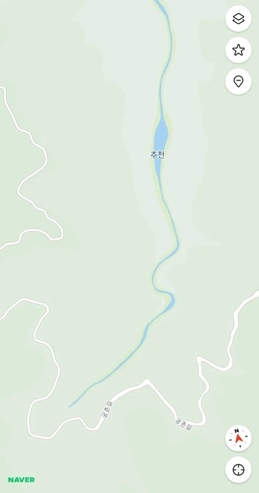

43 · 12 · 9 시간 전 · 원문

허미
수집 당시 댓글 12개
오이쉬 · 23 시간 전
https://www.dogdrip.net/736331584
느려
Doro · 23 시간 전
돌아가면서 하루에 한번씩만 써라
콤푸 · 23 시간 전
개추
구라왕 · 23 시간 전
추천 클리 ㄱ
노르웨이숲 · 22 시간 전
근데 뭔가 존나 야하게 생겼다
극한의씹쌉거유폭유육덕충 · 21 시간 전
모양도 야해..
동탄미시단 · 17 시간 전
우메와모모의평범한일상 · 11 시간 전
이자식 방금 고추라고
다리 · 10 시간 전
느리구나..추천받는거조차
끼랑까랑 · 10 시간 전
추천만 보면 ㄷㅇ중학교 ㅊㅊ일이가 생각난다( 혹시나 아는 사람있을까 해서 소환해봄)
기여운걸조아하는사람 · 10 시간 전
콩냉이순장고 · 10 시간 전

https://www.dogdrip.net/736331584
느려